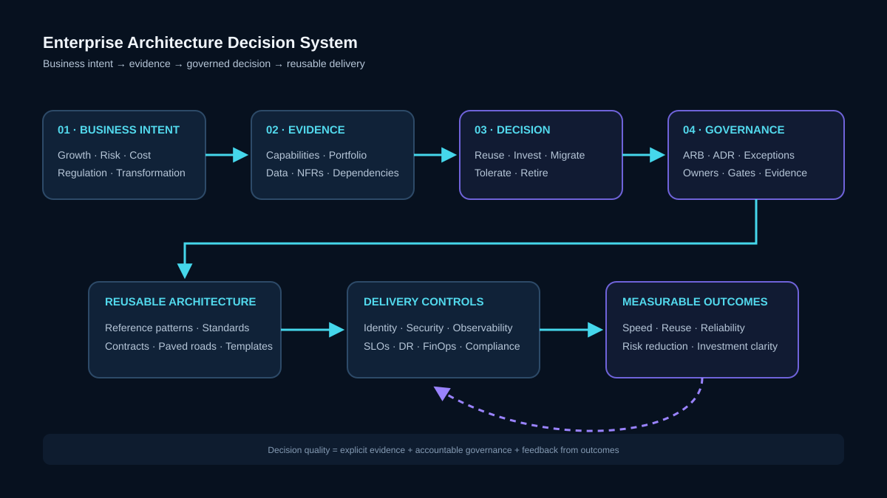
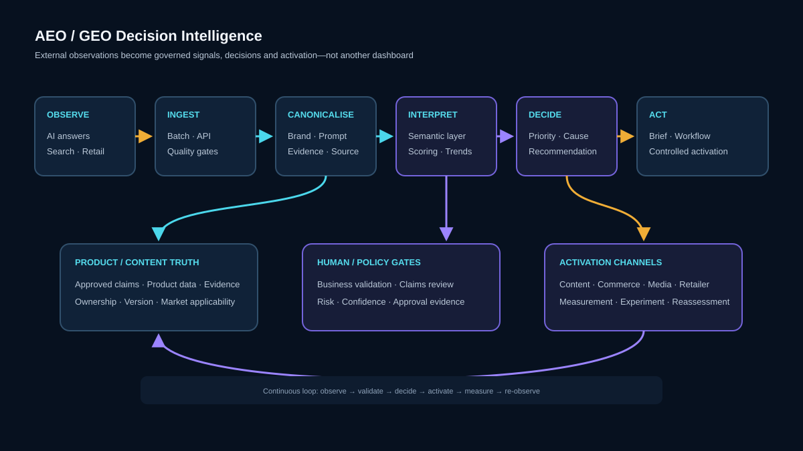

01
Capability before product
Start with the business capability and value stream; then evaluate reuse, build, buy, migration and disposition choices.
Enterprise Architect at Kenvue spanning Commercial Technology, AI/agentic platforms, cloud, data, integration, identity, platform engineering and architecture governance. I connect strategy to delivery through capability models, target-state architecture, reusable standards, investment choices and decision-ready evidence.
My strongest work is where strategy, platforms, risk, data and delivery collide. I make the decision explicit, expose trade-offs, define ownership and convert the outcome into reusable architecture that teams can actually adopt.
Start with the business capability and value stream; then evaluate reuse, build, buy, migration and disposition choices.
Use portfolio facts, dependencies, NFRs, cost, risk, data ownership and operational evidence to make architecture defensible.
Decision rights, lightweight ADRs, architecture gates, exception paths and standards should reduce ambiguity—not add ceremony.
Standards become real when they are encoded into templates, platform services, CI/CD defaults, contracts, runbooks and onboarding.
Recent evidence shows a shift from solution-level review toward enterprise decision leadership across Commercial transformation, AI governance, portfolio transparency and AI-enabled growth.
These diagrams intentionally abstract employer-specific implementation details. They show the architecture thinking, boundaries and governance patterns I use across enterprise transformation.

Connects business intent, evidence, disposition, governance, reusable standards and measurable outcomes.

Frames SalesTech, MarTech, commerce, HCP, experience, data, AI and enterprise foundations as one capability system.

Separates runtime, control plane, gateway, models, tools/data and AgentOps so autonomy can scale with identity, policy and audit.

Turns external AI-search observations into canonical evidence, governed signals, business decisions, activation and feedback.

Defines a composable DXP around channels, experience composition, content/product truth, CIAM, data/AI, commerce and foundations.

Connects public cloud, private cloud, SaaS and legacy through API/event patterns, contracts, security, observability and recovery.

Turns application inventory into a leadership decision base by connecting capabilities, dependencies, ownership and disposition.

Encodes architecture standards into self-service developer experience, CI/CD, runtime and operational controls.
The through-line is consistent: build deeply enough to understand the constraints, then operate at the level where platforms, standards and investment choices shape many teams.
Enterprise architecture across Commercial, Digital, Data, AI, Cyber, Integration and platform stakeholders, with emphasis on capability-led transformation, reusable platform patterns, governance and executive decision support.
Led teams and platform modernization across .NET, Vue/TypeScript, Azure tooling, automated testing and developer experience.
Architecture and code reviews, secure engineering guardrails, Agile delivery improvement and client-facing web capability across Microsoft, Node and Angular stacks.
Led frontend/backend modernization, CI/CD and observability baselines; established rigorous design and code review practices.
Championed cloud-first modernization, legacy-to-cloud migration, observability and automated testing; managed vendor contributions and architecture reviews.
Modernized enterprise retail and analytics platforms using Angular/React/Node, Kafka and data tooling; served as interviewer and mentor and contributed to patented innovation.
Built enterprise and government applications across full-stack Microsoft technologies, healthcare/industry solutions, digital-government workflows and reusable engineering patterns.
These are bounded scope indicators from my architecture evidence log. They demonstrate breadth and complexity without publishing restricted implementation details.
Portfolio, SalesTech, MarTech, Commercial data/infrastructure and innovation views assembled into reusable transformation evidence.
Enterprise scope & strategic influenceCapability-led comparison with evidence, ownership, systems of record and north-star decisions—paired with production-readiness governance gates.
Governance & risk reductionApplication-market records connected to named applications, domains and criticality to improve transparency for rationalization and transformation.
Portfolio transparencyReduced a broad Consumer Growth inventory into a focused capability view suitable for CTO-level prioritization.
Executive communication & decision supportMoved from heterogeneous local source files toward a canonical data and activation architecture with evidence lineage and industrialization boundaries.
Innovation & scaleSynthesized active and implementing records into an executive view and a “common backbone, controlled local edge” architecture principle.
Transformation & scaleI deliberately retain implementation depth. It keeps enterprise recommendations grounded in operability, latency, failure modes, developer experience and delivery reality.
Public repository reflecting distributed/event-driven engineering interests.
↗Older public experimentation demonstrating hands-on systems and integration depth.
↗Interactive mapping / selection work from the public code portfolio.
Targeted Advertisement System (2019) • Automated Resume Screening (2017) • internal architecture playbooks across API/event-first integration, data contracts, identity/consent and AI-enabled commercial technology.
I work best on enterprise problems where multiple teams, platforms and business priorities need a coherent direction: modernization, AI platforms, commercial transformation, architecture governance, portfolio rationalization and shared capabilities.